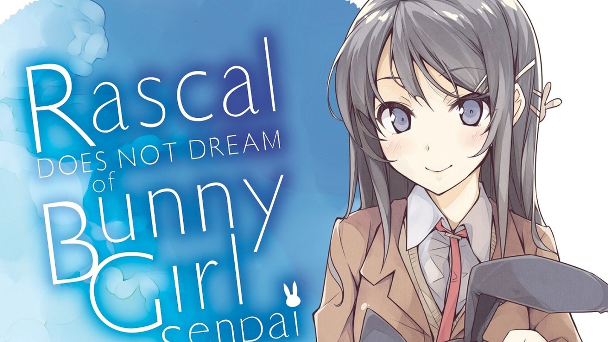
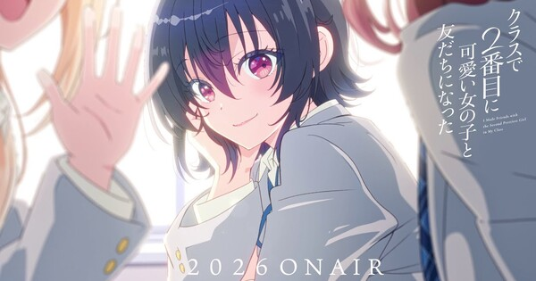
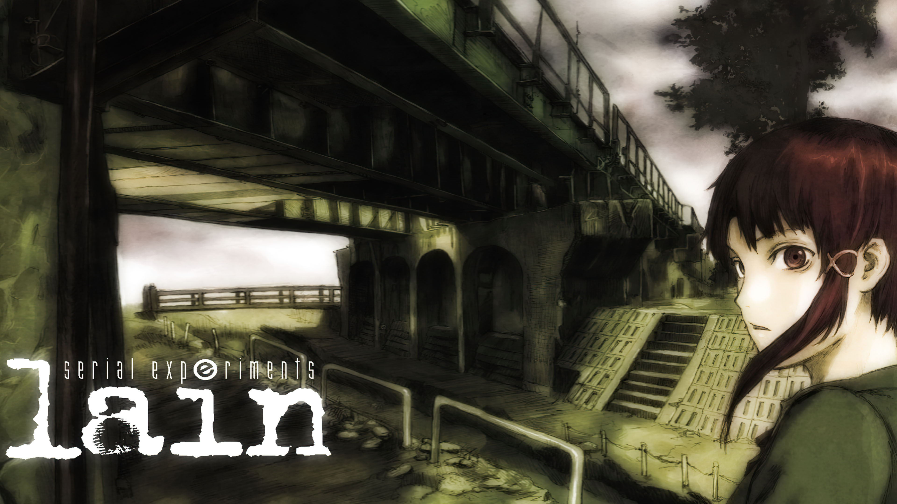

Menu
About Me
Resume
Blog
Projects
Fun Projects
Social
GuestBook
Awareness
Friends
[ Shashwat ]
[ seivarya ]
[ Saad ]
[ Saar ]
Status
✓ site is up
since 2026-05-26
Now Playing
...
...

![[gif]](../gifs/main_header.gif)
Rascal Does Not Dream of Bunny Girl Senpai
Started on: 22-09-2026

I Made Friends with the Second Prettiest Girl in My Class
Finished on: 22-09-2026
Rating: 7/10;

Reason for low rating is lack of any type of conflict, while family conflict were portrayed it was never bought to a good conclusion, i guess it also makes kind sense in the way that it was a past incident just getting it's closure
It was a very sweet romance anime, low stakes, happy ending and all that
Serial experiment: Lain

It was a nice anime, I liked the ending, I have a lots to say about this one but I will probably rant for a long time and say just the same thing which everyone have already said
So would rather not bore you.
Though one observation I will consider is that the world Lain tried to portray ignoring the sucidal stuff and identity crisis, currently we are on verge of time where it looks increasingly likely to be able to generate a engram, even if not perfectly it doesn't really matter, as it's suffciently complex enough to fool someone on internet atleast.
With increasing investment in large datacenter and recent incident about mapping a fruit fly brain, even the fictional engram looks a lot closer to reality than just what Machine learning models can already do i.e. being able to learn from someones chatting pattern and being able to expertly guess the next sentence the specific person will say resulting in behavioural mapping
Infact some of my friends have even done these stuff on their laptops with limited resource such as fetching someone discord chat which have been built for half a decades, getting some previous and later text and training models to be able to mimic that person with limited success, which is rather scary isn't it?. Whole internet has the possiblity to produce such false/dead person. Diffusion models have become so good that one can make their whole life from a basement, from a wife to children to whole lifestyle with none the wiser if they are even slightly more careful
Video models being able to produce realistic videos. All in all it's rather scary not only for the death of human demand in job market but just from identity point of view. Who knows the next friend you make on internet could be one of the bots keeping itself entertained and learning from your interaction so it can mimic you too.
The things I am talking about here is more of implication of a technology rather than just what we can do today. Each technology we make implies something more. Birds implied Aeroplane which implied one can reach moon which implied why not other planet and it keeps one implying so anyone thinking that what we cloned was just a fly brain and it's nowhere as close to complexity of human mind surely is a fool who ignores the power of hope and possibility a technological break through brings.
\now
\logs
\uses
\links
\garden
\shrine
\buttons
\arts
\videos
\anime
\anime
![[gif]](../gifs/test/tsukihime-tsukihime-remake.gif)
![[gif]](../gifs/test/saber-fate-saber.gif)
![[gif]](../gifs/test/fate-padoru-christmas.gif)

BGM
[play]
theme toggle
[dark mode]